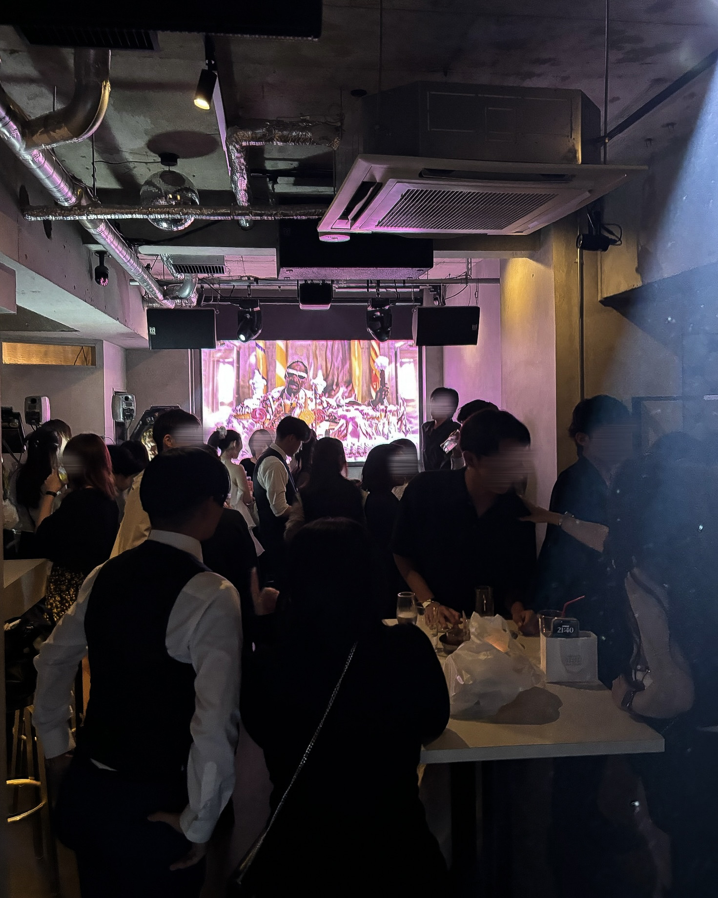
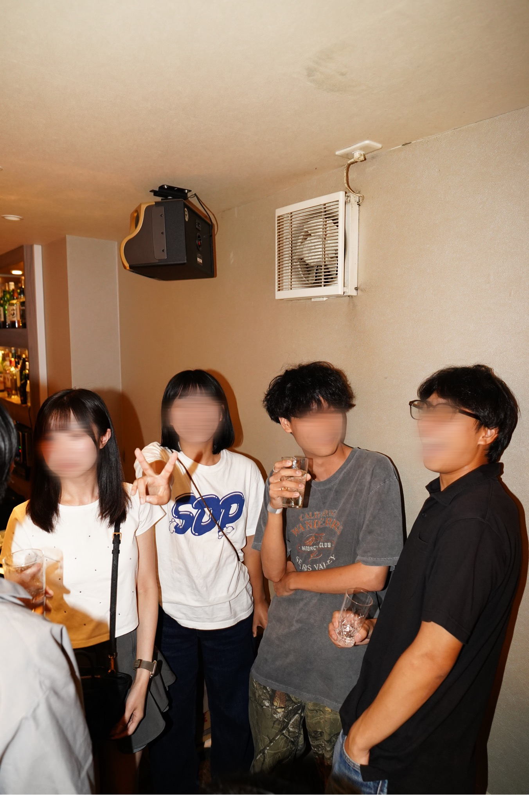
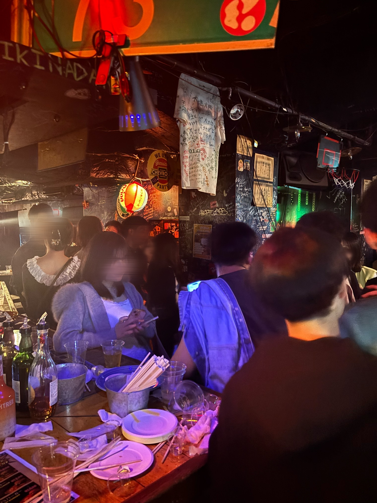
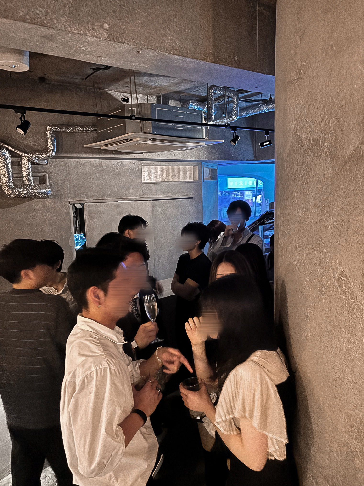
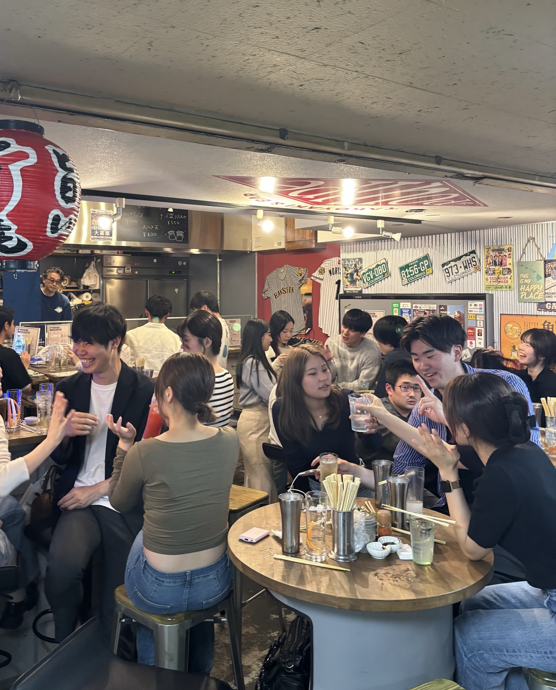
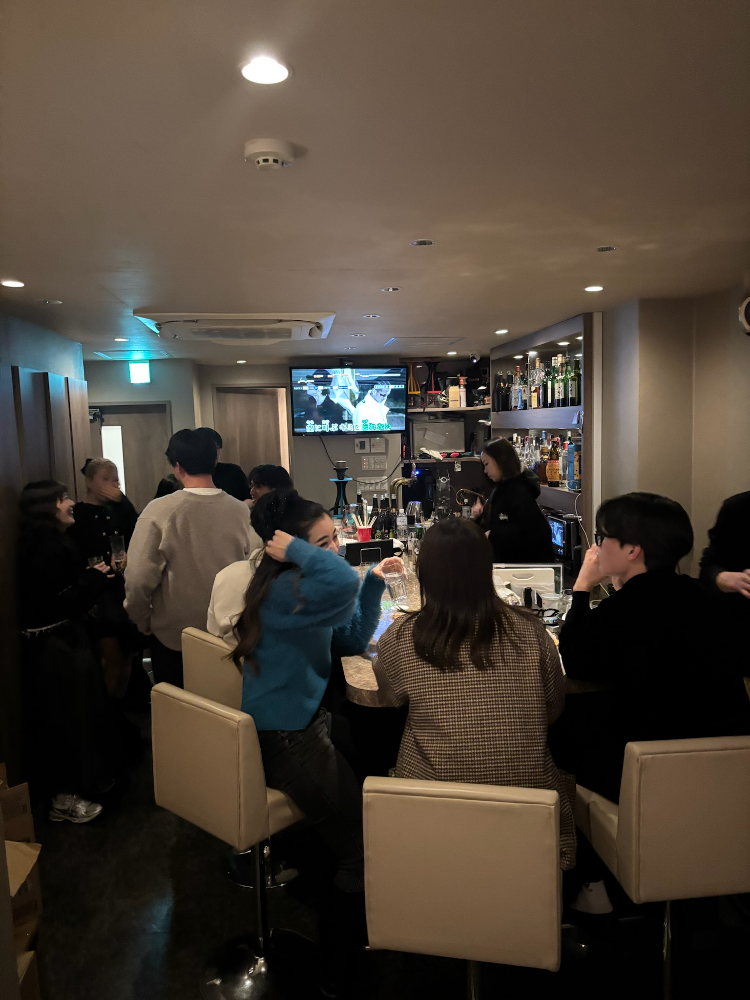
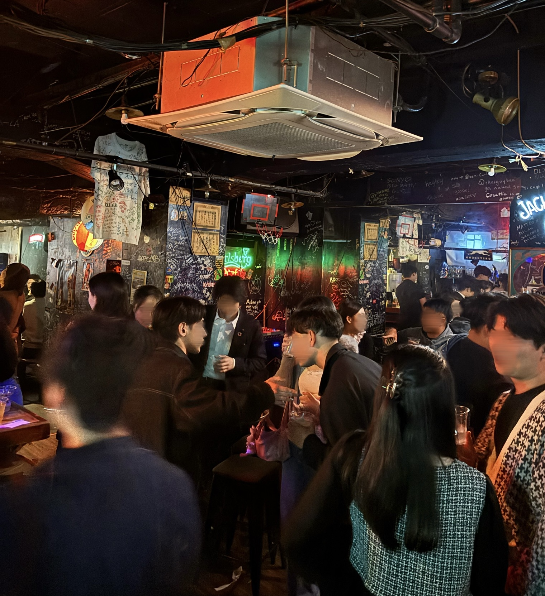
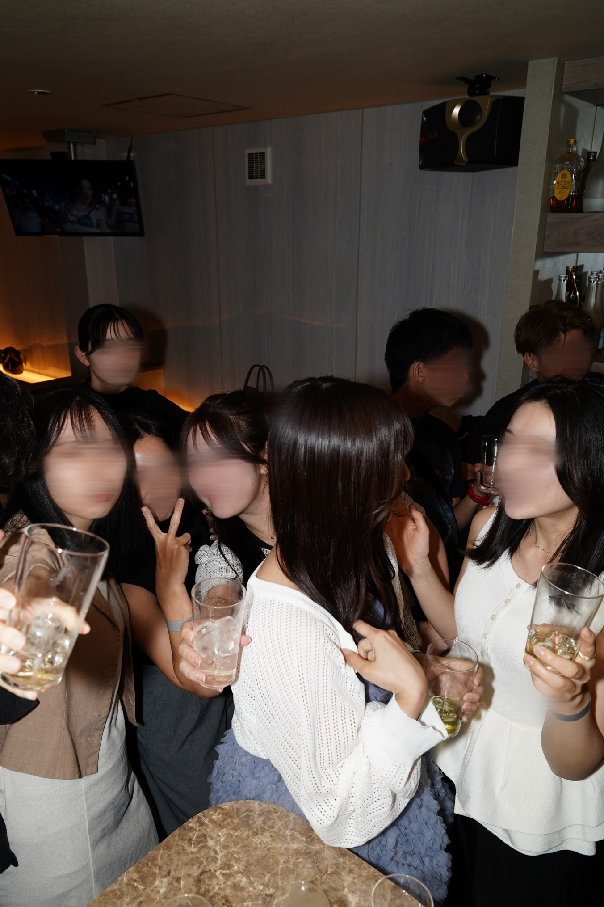
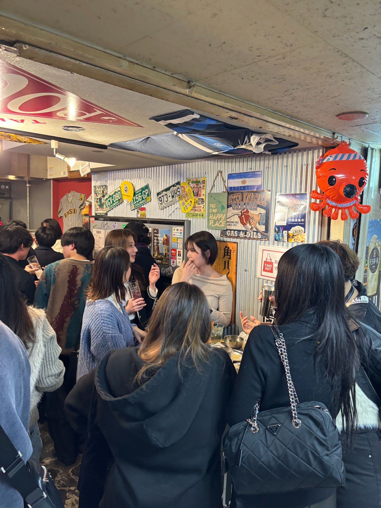
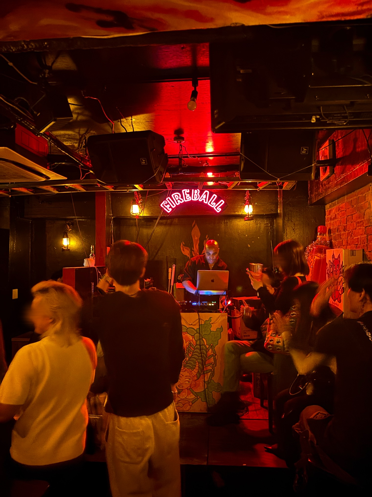

OSAKA
7/11（土）大阪｜20代飲み会
初参加・お一人参加歓迎。20代を中心に、自然に会話が生まれる交流会です。
- 時間
- 19:30〜22:30
- 場所
- 梅田
- 対象
- 初参加・おひとり参加歓迎。
- 参加人数
- 30〜36名（最大40名）
- 参加費
- 男性 5,000円 / 女性 3,000円
SCHEDULE
各イベントの詳細をご確認のうえ、申し込みフォームをご入力ください。
OSAKA
初参加・お一人参加歓迎。20代を中心に、自然に会話が生まれる交流会です。
KOBE
初参加・一人参加歓迎。20代を中心に、自然に会話が生まれる交流会です。
MOOD
大人数の賑わいと、自然に話せる距離感。 初めてでも入りやすい空気を大切にしています。

初参加でも、ふとしたきっかけで話が始まるような場づくりを意識しています。

参加者の多くが一人参加です。落ち着いて話せる雰囲気も大切にしています。

開催ごとに、場所やコンセプトに合わせた雰囲気づくりを行っています。

ABOUT
学校や職場とは違う、新しいつながりが生まれる場所。 開催ごとに対象やテーマを設定し、自然につながりやすい交流の場をつくっています。
一人参加の方が約70%。
初めての方でも過ごしやすいよう、自然に会話が生まれる空気を大切にしています。
20代会、25-35歳会、リピーター会、
ドレスコードイベントなど、開催ごとにテーマを設定しています。
しつこいナンパ、マルチ、宗教、投資目的の参加は禁止しています。
GALLERY
実際のイベントや会場の雰囲気を、写真でご覧いただけます。






SNS